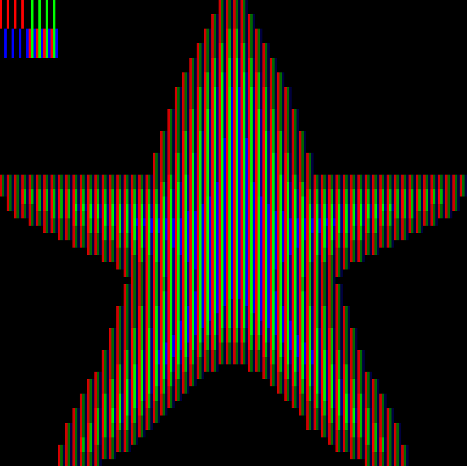
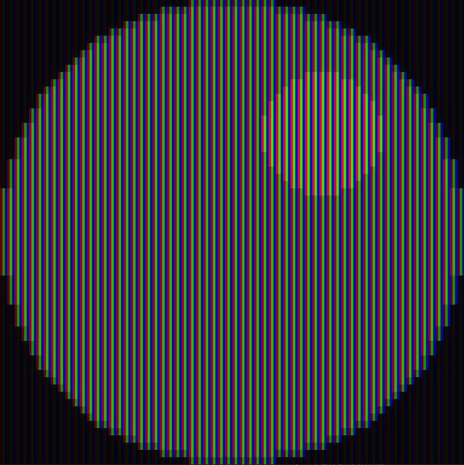
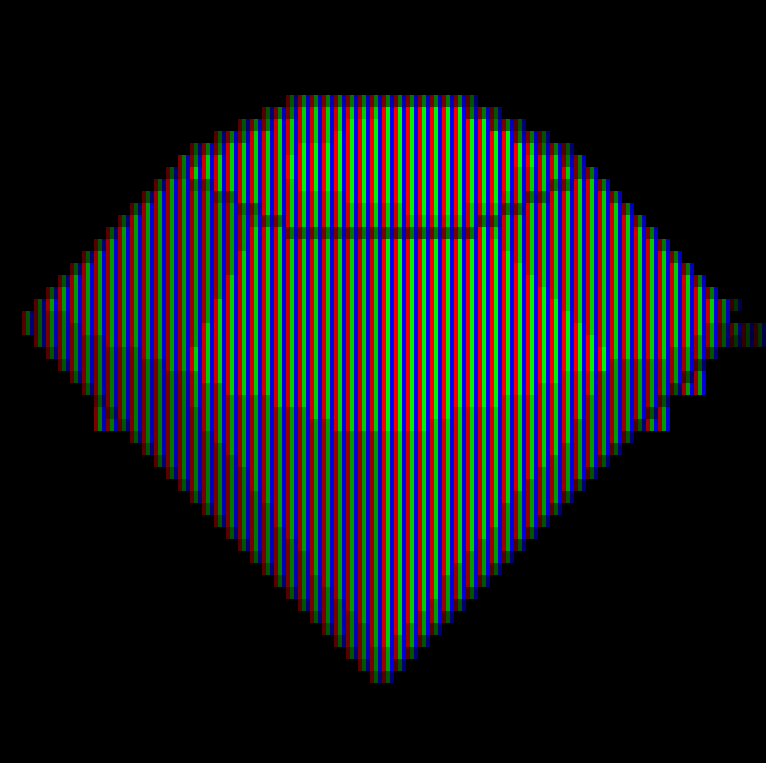
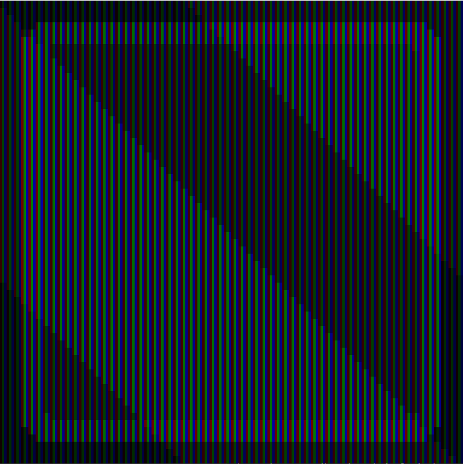
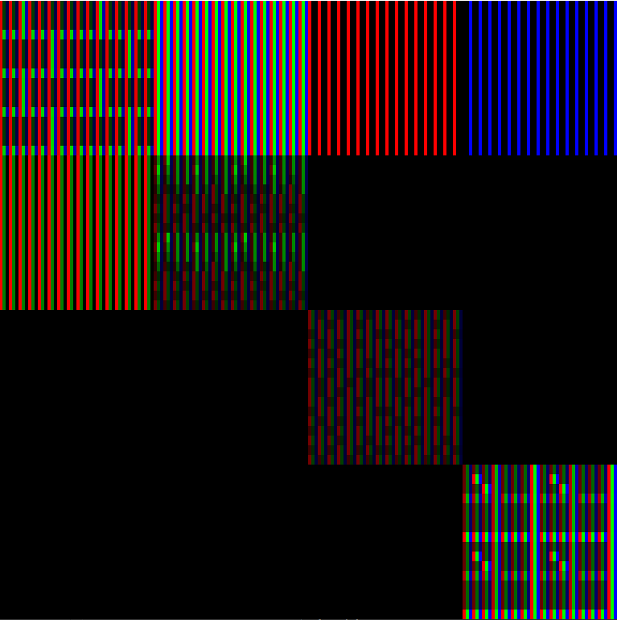
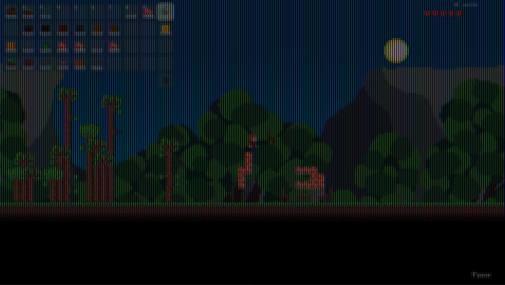
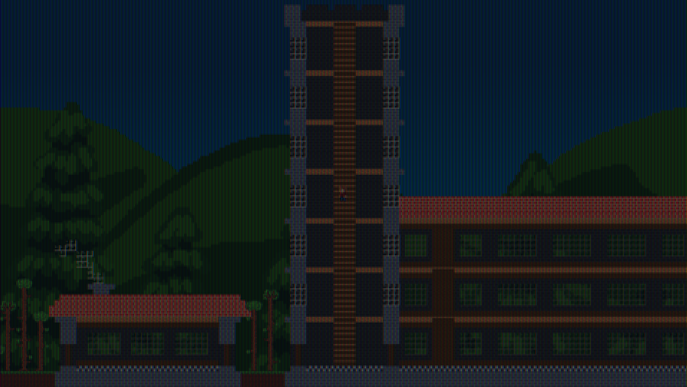

Screen Simulation
Daniel Vishnevsky
About
2D screen simulator and sprite renderer capable of drawing rectangles and sprites. Supports all RGB colors. Made with C++ and SFML.
Features
Very simple 2D sprite renderer that simulates a screen with each pixel being 3 rectangles - red, green and blue. It can draw both rectangles and sprites. It achieves this cool effect and looking from afar it looks like a genuine sprite. It doesn't handle transparency that well and it includes some artifacts either from SFML or from transparency.
Development
This is a very simple project to make. It popped in my head and I made it the very same day. If I would create this today starting afresh then I would add more features like drawing lines and triangles to make it more robust. Source code is available on Github.
Gallery





